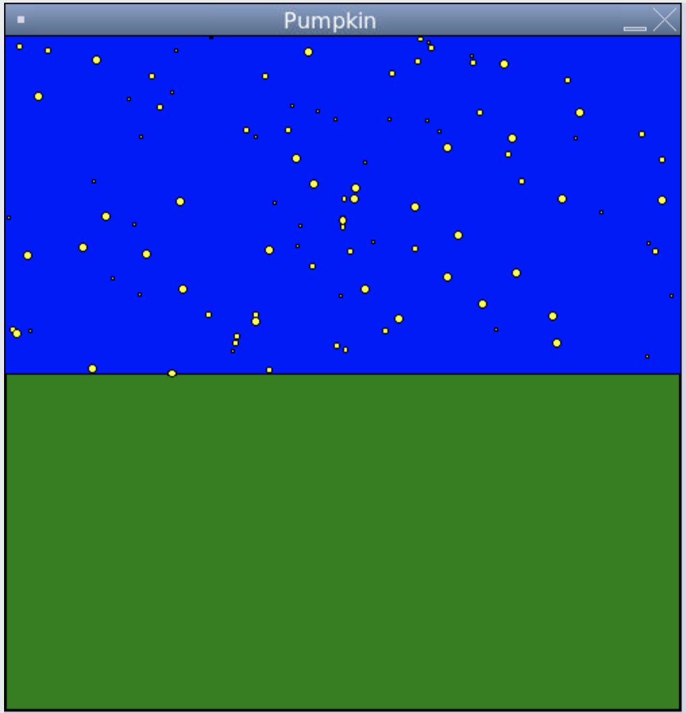
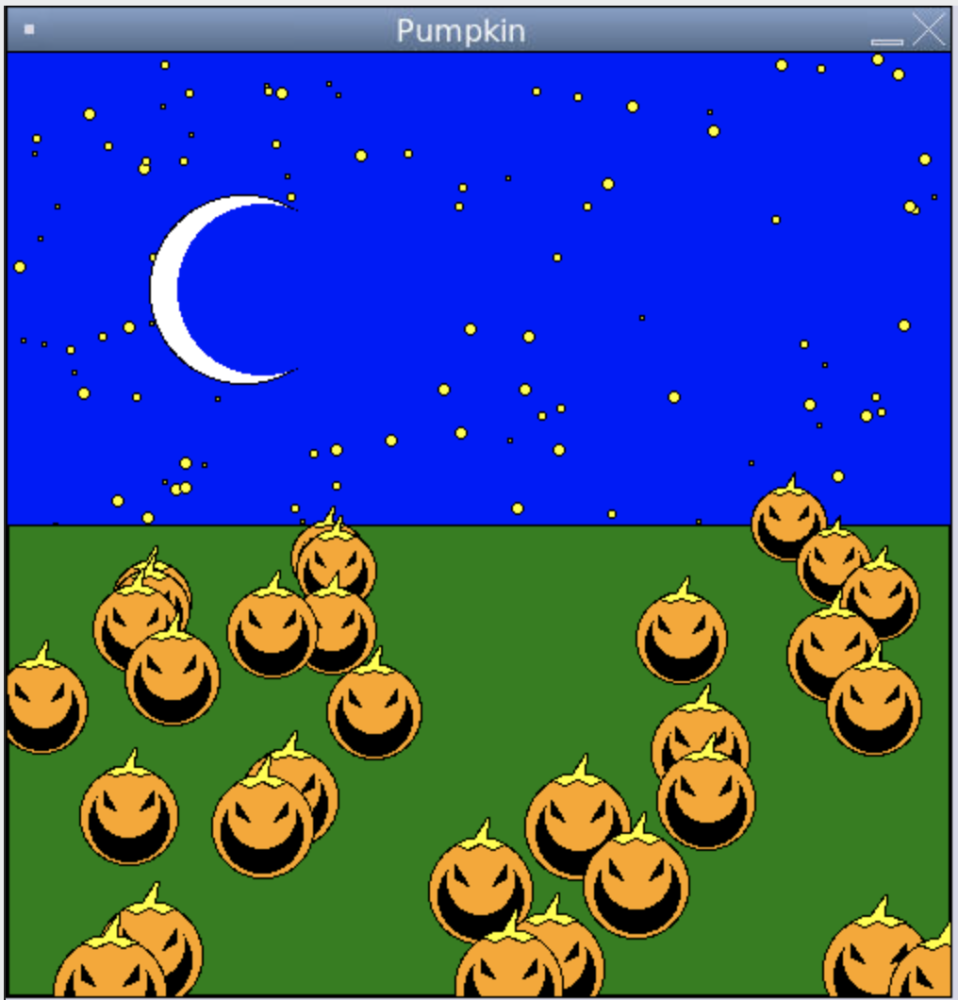

CSC 111
Introduction to Computer Science Through Programming
Smith Computer Science
Introduction to Computer Science Through Programming
Smith Computer Science
The following is where we left off:

We plan to get here:

The next steps are:
First discuss the components using drawings and geometry
Simply make a moon from the main with different parameters for "ang"
First discuss the components using drawings and geometry
First discuss the algorithm that might solve the problem for us
First discuss the components using drawings and geometry
You might want to work outside of Replit. Sometimes because you don't want to depend on having access to the internet, or because you are using your own preferred IDE (Integrated Development Environment).
The following steps show how to achieve this in a simple way.
(Note that our program is not optimized for speed, so it will run very slowly)
The first step is to check if you have python3 installed:
We will follow some tricks from this Python Cheatsheet
Open a Terminal in Mac (or cmd window... in Windows), and run the following command:
python3 --version
Now, let's check if you have the right module (Tk... which lets graphics.py run):
python3 -m tkinter
If you don't have tkinter, you'll see a message "like" this one:
/usr/local/bin/python3: Error while finding spec for 'tkinter.main' (: No module named '_tkinter'); 'tkinter' is a package and cannot be directly executed
In that case, we'll install python version 3.10 from the https://www.python.org/ website.
Just scroll down to Downloads, under which you'll see something like "Latest: Python 3.10.0".
Click that link, and scroll down to the Files section, where you'll click the correct file for your system (If you are on windows, you need to Check if your Windows is 32- or 64-bit).
In windows, if anything goes wrong, check out This tk install tutorial
Final Project Speciffication